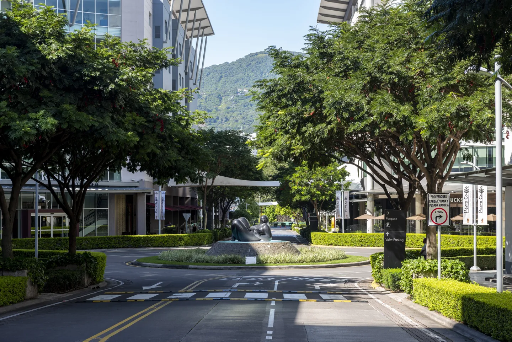

Escazú is a modern and vibrant city located just west of San José, the capital of Costa Rica. Known as one of the country’s most upscale areas, Escazú blends urban development with beautiful mountain views, offering a mix of luxury residences, shopping centers, fine dining, and international businesses. Its strategic location and high standard of living have made it a popular destination for both locals and expatriates.
Beyond its modern lifestyle, Escazú is also rich in culture and tradition. Often called the “City of Witches” due to local folklore, it preserves historic churches, festivals, and a strong sense of community. The city provides a unique balance of modern amenities and cultural heritage, making it one of the most attractive and dynamic places to live or visit in Costa Rica.
